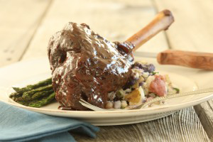
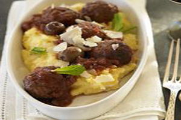
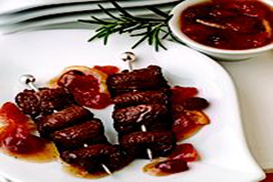
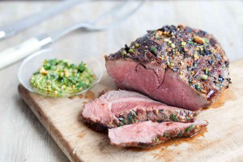
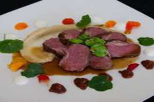

- Recipes
American Lamb Shank
American Braised American Lamb Shank with Herb-smashed Baby Potatoes and Roasted Asparagus
Ingredients Needed:
Procedure:
1. Tie thyme, parsley and rosemary with cooking twine; reserve. Season lamb shanks generously with salt and pepper. 2. Heat 2 tablespoons oil in a large Dutch oven over medium-high heat. Working in 2 batches, sear shanks until browned on all sides, about 10 minutes per batch, replacing oil for second batch. 3. Remove shanks to a plate. Drain all but 2 tablespoons fat from Dutch oven; add onion, garlic, celery and carrots. Cook, stirring, over medium heat, until carrots begin to soften, about 4 to 5 minutes. Add wine; bring to a boil. Reduce heat and cook until most of liquid is evaporated, about 15 to 20 minutes. Add tomatoes, beef stock, honey and herb bundle; return to a boil. Add reserved shanks; cover tightly, reduce heat to a simmer and cook, occasionally spooning sauce until shanks are tender, about 3 hours. Remove shanks from liquid to a platter; cover to keep warm. Remove herb bundle and discard. Pass liquid and solids from Dutch oven through a food mill or fine-mesh strainer. Return puree to Dutch oven and bring to a boil. Boil until liquid has reduced by about half, 20 minutes. Season with salt and pepper to taste, return shanks to sauce and keep warm. 4. Braised American Lamb Shank with Herb-smashed Baby Potatoes and Roasted Asparagus
Lamb Meatballs
American Tomato & Olive Braised American Lamb Meatballs with Soft Polenta
Ingredients Needed:
Procedure:
Braising Base
Begin the braising base for the lamb meatballs: In a large casserole, render the bacon with a small amount of oil. Add in onion; season lightly with salt. Cook until onion is soft. Add in garlic; sweat for 1 to 2 minutes. Deglaze with wine; cook for a few minutes. Add in tomatoes and paste; bring the sauce to a simmer. Wrap butcher’s twine around the bottom of the thyme and rosemary and tie together; add to sauce. Cook sauce while preparing meatballs.Meatballs
In a bowl, combine lamb, bread crumbs, ricotta, Pecorino, egg, parsley, cumin and paprika; mix well with your hands. Season with salt and pepper. Form meatballs. In a lightly sprayed sauté pan, add meatballs. Place under a broiler to cook, or brown on the stovetop. When brown, transfer meatballs to braising base. Place a parchment cover on the pan; cook at 325ºF about 1 hour. To finish the dish, stir the olives into the meatball mixture. Serve over creamy polenta and sprinkled with chopped fresh mint, grated Pecorino, olive oil and black pepper.The Lamb and the Fig
American The Lamb and the Fig
Ingredients Needed:
Lamb
Procedure:
Lamb
Trim lamb loin of excess fat, but leave fat cap on; score fat. Season with Ras el Hanout spice, salt and pepper. Wrap meat with fig leaves, leaving fat exposed. Wrap meat in plastic wrap, tightening plastic to form a cylinder; vacuum pack. Cook in immersion circulator at 53º Celsius for 1 hour. Remove from bag. In a hot skillet, sear meat, fat-side down, until caramelized. Let rest for a few minutes; slice across grain.Chickpea Polenta
In a pan, bring stock or water to a boil. Over medium heat, whisk in flour; cook for about 40 minutes until thickened. Remove from heat; season with salt, pepper, oil and lemon zest.,br>Charred Eggplant
Grill whole eggplant until skin is charred. Remove skin and charred bits; chop finely and set aside. Slice shallot and garlic. In a pan over medium heat, cook shallot and garlic with oil. Add eggplant, salt, pepper, lemon juice and chili flakes. Remove from heat; puree in blender or food processor.Fig and Tomato Chutney
Blanch tomatoes in boiling water; remove seeds and skin. Chop figs, fig leaf and nasturtium. In a pan, combine figs, fig leaf, nasturtium, sugar, vinegar and pepper. Cook over medium heat until marmalade consistency.Fava Beans
In a large bowl, add fava beans, mint, parsley, lemon juice, oil, salt and pepper; toss together.Sauce
In a pan, heat canola oil over medium-high heat. Roast bones in oil until caramelized; drain excess fat. Add garlic, shallots and peppercorns. Deglaze the pan with vinegar. Add stock and chopped nasturtium leaves; simmer over medium heat for 1 hour. Strain; bring to a boil. Reduce to desired consistency; add chopped nasturtium flowers. To serve, spoon chickpea polenta onto the center of the plate. With a small offset spatula, smear the eggplant across the plate, next to the chickpea polenta. Put the yogurt and chutney into separate squirt bottles; squeeze 5 to 6 medium-sized dollops of each around the plate close to the chickpea polenta. Fan out the lamb slices on top of the chickpea polenta, leaving the polenta partially exposed. Arrange fava beans in between the chickpea polenta and the lamb. Glaze the meat with the sauce; garnish with the nasturtium leaves and flowers.Lamb Skewers
American Pomegranate Marinated American Lamb Skewers with Persimmon Chutney
Ingredients Needed:
Pomegranate Marinated Lamb Skewers
Procedure:
Pomegranate Marinated Lamb Skewers
In large bowl, combine lemon juice, pomegranate molasses, cumin, salt and pepper. Add lamb slices and toss to coat. Cover, marinate and refrigerate for 1 hour. Remove lamb from marinade. Weave 2 or 3 pieces of lamb on each skewer, pushing it to the tip of the skewer to avoid burning. Broil or grill the skewers, about 5 to 6 inches from heat source, 2 to 3 minutes on each side for medium-rare or to desired degree of doneness. Place skewers on a platter and serve with a bowl of Persimmon Chutney for dipping.Persimmon Chutney
In 3-quart saucepan, combine all chutney ingredients. Simmer over medium-low heat for approximately 45 minutes to 1 hour, stirring occasionally. Cook until mixture is thickened to the consistency of a relish. Let cool before serving (chutney will thicken more upon cooling). Tip: Pomegranate molasses may be purchased in Middle Eastern and specialty food stores. Hint: Toast cumin seeds in a 325°F oven for about 5 minutes; grind in blender or coffee grinder. Wine Pairing Suggestion: Chef Heidi Krahling suggests serving Riesling wine with this meal.Roasted Lamb
American Roasted Lamb
Ingredients Needed:
Procedure:
1.Cut sirloin tip into 1-inch cubes. 2.Place in casserole with garlic powder, onions, liquids and seasonings. 3.Cover and bake at 350° for 1 hour until beef is tender. 4.Thicken gravy with the blended flour and margarine. 5.Serve with mashed potatoes, noodles, or rice.